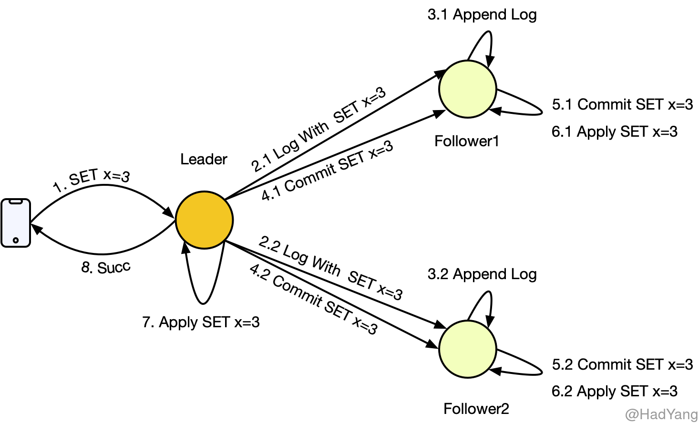
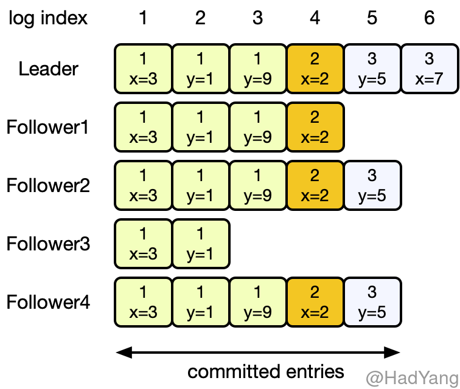
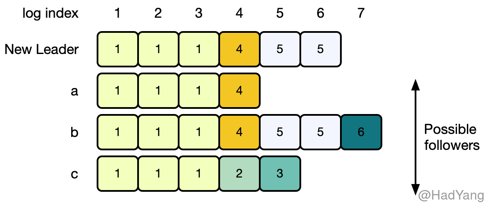
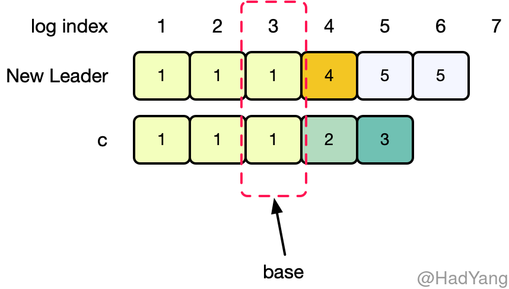
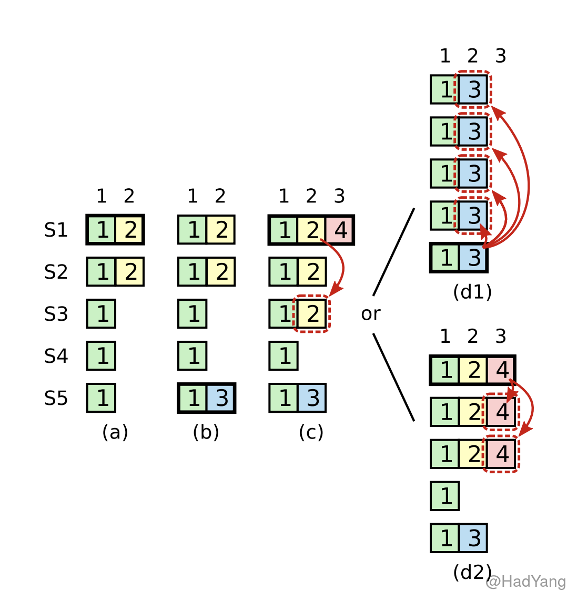

【Raft】日志复制
文章目录
日志复制
Raft 中日志的组织形式如下图所示，每个 日志条目（LogEntry）都包含一条命令、 任期（Term）信息，以及一个正整数 索引（Log Index） 来标记其在日志中的位置。索引在不同的任期可以重复，但在同一任期内必须唯一。
日志条目在节点中的状态通过两个变量控制：CommitIndex 和 LastApplied，通过这两个变量就可以让日志条目在以下三个状态中进行转换：
- 已写入：日志条目 Append 到节点上，未进行其他操作，日志条目可以只存在内存中
- 已提交：Leader 把日志条目复制到集群中大多数节点，Leader 通过更新
CommitIndex将日志条目置为提交状态。 - 已应用：Leader 通过
AppendEntries请求将自己的CommitIndex通知给其他节点，其他节点进行提交操作，当大多数节点提交完成后，Leader 更新自己的LastApplied并将日志条目中的命令应用到状态机中。
日志状态通过 AppendEntries 请求完成的，如果 Follower 由于故障或网络延迟等原因，未能返回成功，则 Leader 会持续重试 AppendEntries 直到 Follower 返回成功。当 Leader 应用某条日志条目后，就可以返回给客户端了。

当集群中大多数节点，把日志条目提交后，这个日志条目就是 持久 的,并且最终会被所有状态机执行。当 Leader 将创建的日志条目复制到超过半数的节点时，就可以提交这个日志条目，比如：下图中的第五个日志条目$e_5$。当 $e_i$ 被提交时，对于任意 $j<i$ 日志条目 $e_j$ 也都会被提交，即使是 前一个任期 的。

Leader 会将自己的 CommitIndex，放在 AppendEntries 请求中，这样即使其他节点故障，当其恢复时也能感知到。一旦 Follower 发现某个日志条目已提交，则 Follower 会将其应用到本地状态机。
日志一致性
Raft 的日志机制让整个集群的行为十分简单和可预测，同时也是保证安全性的重要环节。Raft 保证如果两个日志序列包含具有相同 索引 和 任期 的日志条目，则直到这个日志条目的所有日志条目都是相同的，这个属性被称为 日志一致性。Raft 通过以下两个属性来保证日志一致性：
- 如果不同的日志序列中的两个日志条目具有相同的 索引 和 任期，那么这两个日志条目包含相同的命令
- 如果不同的日志序列中的两个日志条目具有相同的 索引 和 任期，那么这两个日志条目 之前 的所有日志条目均一致
Leader 在同一任期内不会创建具有相同索引的日志条目，并且在日志复制过程中，也不会修改日志条目的相关信息，因此第一条属性成立。
当 Leader 在发送 AppendEntries 请求时，会将本地最新日志的前一个日志的索引和任期信息添加到请求中，如果 Follower 在其本地日志中没有匹配上前一个日志，则拒绝本次请求，这就是 AppendEntries 的 日志一致性校验。这个日志一致性校验就保证了第二条属性，可通过以下步骤进行归纳：
- 初始化状态下，由于没有日志，所以 “日志一致性” 满足
- 当日志增长时，日志一致性校验可以保证 “日志一致性”
最后，只要 AppendEntries 返回成功，则 Leader 就知道 Follower 的日志与自己最新日志之前的日志保持同步。
日志截断
在正常状态下，Leader 和 Follower 的日志均保持一致， AppendEntries 的日志一致性校验也不会失败。但是当 Leader 故障时，就可能导致不一致的情况，比如：Leader 故障前，没能把日志复制到所有的节点。这种不一致可能同时在多个节点出现，下图展示了 Follower 与新的 Leader 不一致的情况。Follower 可能缺少了一些 Leader 上的日志，可能有多余的日志，也可能两种情况都存在。

上图中，当新 Leader 被选出后，Follower 上日志的状态可能为 a-c 这三种，其中每个方格里的数字表示日志的 Term。（a）表示 Follower 上的日志有缺少，（b）表示 Follower 上的有未提交的日志，（c）表示即有缺少也有多余未提交的日志。
Raft 算法在处理日志不一致的时候，采取 日志截断 的方式，将 Leader 的日志强制覆盖本地的日志。为了将 Follower 的日志状态与自己同步，Leader 需要找到自己的日志和 Follower 日志的公共祖先，就好比两个分叉的链表，需要找到分叉的那个 LogEntry，比如下图中 Log Index 为 3 的 LogEntry。

在找到这个日志条目Base 后，Leader 将之后的日志条目按顺序发送给 Follower，Follower 则从 Base 开始覆盖本地日志。这里的所有操作，均通过 AppendEntries 请求完成。
Leader 为每个 Follower 都记录一个变量 nextIndex，表示下一个需要发送给 Follower 的日志索引。当节点转变为 Leader 时，每个 Follower 的 nextIndex 均初始化为下一个日志条目的索引，在上图中为 7。
如果 Follower 的日志与 Leader 不一致，则 AppendEntries 会返回失败，并且 Leader 会递减 nextIndex 再次发起 AppendEntries。最终，nextIndex 会到达一个点，在这个点上 Follower 和 Leader 的日志条目一致。这时，AppendEntries 的日志一致性校验就会成功，Follower 删除不一致的日志，并把 Leader 的日志追加到本地。这样持续追加，Follower 的日志就和 Leader 的日志保持一致。
在这种日志复制的机制下，为了将集群日志恢复为一致的，Leader 不需要进行任何特殊的操作，只需要和正常情况下发送 AppendEntries 请求，在日志一致性校验的作用下，不一致的日志就会自动的变为一致。这样 Leader 就只会追加日志，而不需要删除或覆盖自己的日志。
可用的优化
上面有提到，当不一致发生时，Leader 需要通过请求 “探测” 出一个 Base 节点。理论上来说，这种 “探测” 是低效率的，可以通过修改通信协议，比如：当日志一致性校验失败时，Follower 返回请求 Term 里最小的 Log Index，这样就可以大量减少这种重试。但 Raft 设计者认为，不一致是不常发生的，并且不会有这么多不一致的日志。这种优化会增加算法的复杂度，所以 Raft 算法没有进行这个优化。
前任的日志
当 Leader 将日志复制到超过半数节点后，就会提交这个日志。如果在提交前，Leader 故障了，那么新任 Leader 会尝试完成这个日志的复制过程。然而，新 Leader 不能很快的计算出之前的日志是否已经复制到超过半数的节点。

在上图中展示了一种情况，如果 Raft 新节点 “手动” 提交日志条目所可能发生的情况。
- （a）S1 作为任期 2 的 Leader，在索引 2 的位置写入新条目，并且复制到部分节点，未提交。
- （b）S1 故障，S5 被选举为任期 3 的 Leader，在索引 2 的位置写入新条目
- （c）S5 故障，S1 重新被选举为任期 4 的 Leader，在索引 3 的位置写入条目，并且继续复制之前任期的日志
- （d）这里就有可能出现两种情况
- （d1）如果在上一步，S1 复制完成后提交了索引 2 的日志，并且返回给客户端，那么当 S1 故障，S5 重新被选举为任期 5 的 Leader，就会覆盖已提交的日志
- （d2）S1 继续复制索引 3 的日志，并且在复制到大多数节点后进行提交，这时索引 2 的日志条目也被提交，并且 S5 不会再被选举为 Leader
在上面的示例中，由于 S1 “手动” 提交了日志，导致新 Leader 可以覆盖已提交的日志。为了防止这种情况， Raft 采取上图中 d2 的方式。新 Leader 不会提交前任的日志，而是提交当前任期的日志，根据 “日志一致性” 原则，前任的日志也会被提交和应用。当然，如果新 Leader 能将日志复制到所有节点上，那么它也可以直接提交前任的日志，但 Raft 为了简单没有选择这样做。